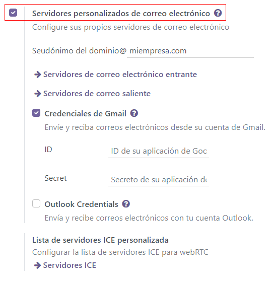
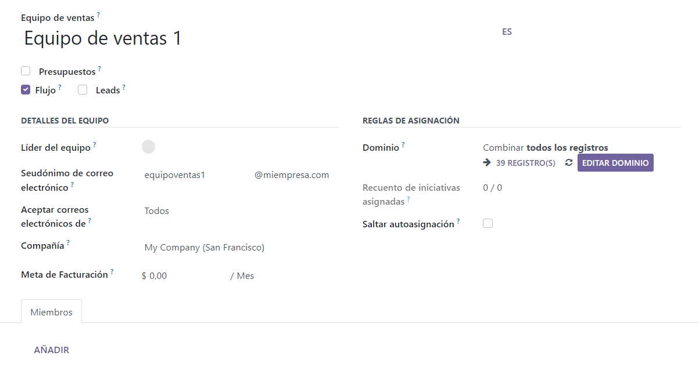
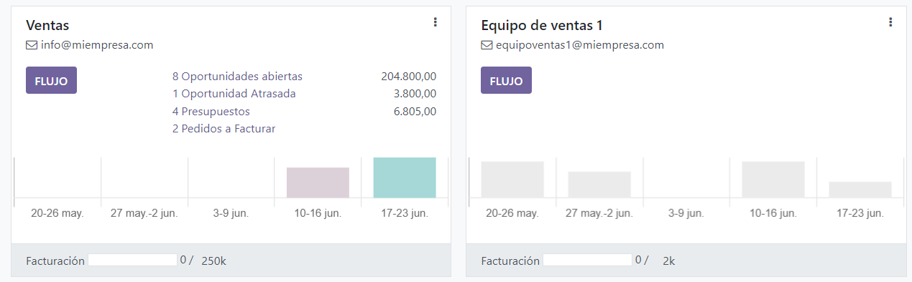
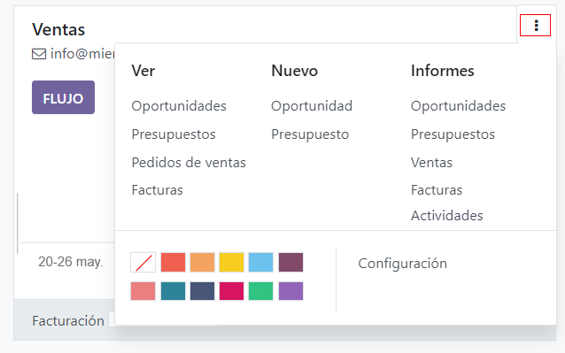

Varios equipos de venta¶
Use la función de Equipos de venta para gestionar varios equipos de venta, departamentos, o canales con su proceso de ventas único.
Cree un nuevo equipo de ventas¶
Para crear un nuevo equipo de ventas, vaya a y haga clic en Crear.
En la página de creación configure un Seudónimo de correo electrónico. De esta manera, si se envía un correo a esta dirección de correo, se creará un lead o una oportunidad de manera automática para este equipo en específico. Usted puede elegir si acepta correos de Todos, Contactos autenticados, o Solo seguidores.
Si el equipo tiene una meta de ingresos, puede configurar un Objetivo de facturación. Configure un Dominio para asignar leads u oportunidades a este equipo de ventas según filtros específicos, como el país, el idioma o la campaña.
 Agregar miembros al equipo de ventas¶
Para agregar miembros al equipo, vaya a la pestaña de Miembros y, en modo edición, haga clic en Agregar en la página de configuración del equipo. Seleccione un vendedor del menú desplegable o cree un vendedor nuevo. Seleccione un número máximo de leads que se le puede asignar a este vendedor en un periodo de 30 días, así se asegurará de que sus vendedores no están trabajando de más.
Usted puede agregar personas como miembros del equipo o como líder del equipo en varios equipos de venta, de tal manera que estas personas tendrán acceso a todos los flujos que sean necesarios.
Tablero del equipo de ventas¶
Para ver el tablero del equipo de ventas, vaya a . Los usuarios de Odoo verán el equipo del que sean parte.
Cada cuadro que vea en este tablero le dará un resumen de las oportunidades, cotizaciones, órdenes de venta e ingresos esperados de cada equipo de venta. Además, podrá ver una gráfica con las oportunidades nuevas por semanas y una barra de progreso de la facturación.
Haga clic en los tres puntos que se encuentran en la esquina de la tabla para abrir un menú de navegación que los usuarios pueden usar para ver documentos o reportes, crear nuevas cotizaciones y oportunidades, elegir un color para esta equipo, o acceder a la página de configuración del equipo.
Haga clic en el botón que dice Flujo para ir directamente al flujo de CRM del equipo.